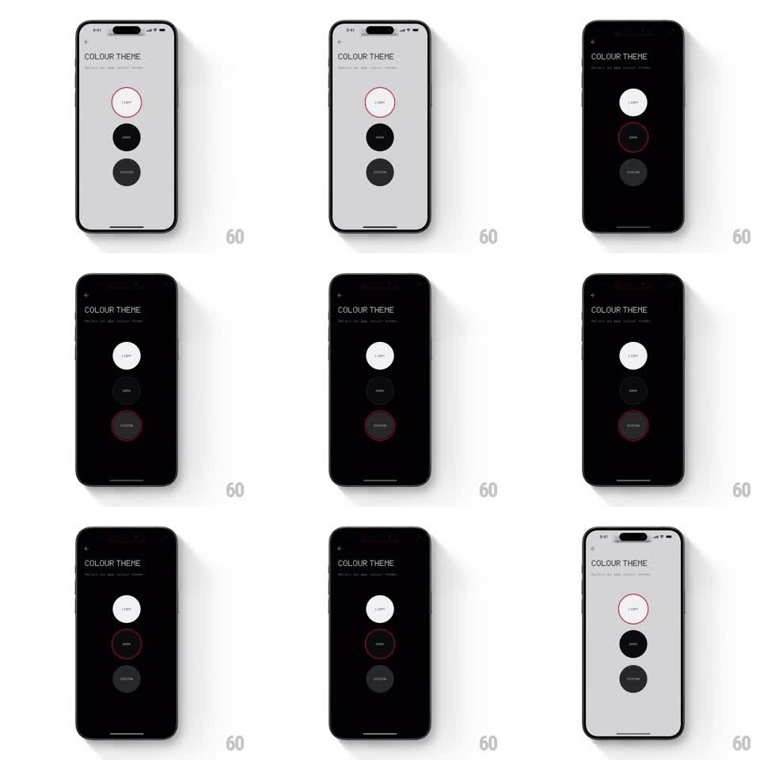

Media
Frame-by-frame

Rebuild this interaction 1:1: Nothing X's colour theme picker - three stacked circular options (Light, Dark, System) with a red-outlined selection ring that slides between them while the whole screen previews the chosen theme.

Rebuild this interaction 1:1: Nothing X's colour theme picker - three stacked circular options (Light, Dark, System) with a red-outlined selection ring that slides between them while the whole screen previews the chosen theme. ## Integration Integration: stack-agnostic spec - springs given as stiffness/damping, timed motions as duration + curve; map every value to your framework and animation library of choice. ## Scene A minimal "COLOUR THEME" settings screen in Nothing's dot-matrix voice: back chevron, small-caps header, and three large circles stacked vertically - Light (white fill), Dark (black fill), System (gray fill) - each labeled in tiny dot-matrix text. A thin red-outlined ring marks the selection. The screen background itself is the preview: light gray for Light, black for Dark. ## Motion spec Pattern: sliding selection ring with live theme preview. - Tap a circle: the red ring slides from its current circle to the tapped one (spring ~350/28), stretching slightly along its path (scaleY 1.1 mid-travel) like a rubber band. - As the ring travels, the entire screen crossfades to the selected theme (300ms, ease-in-out) - background, text, and the other circles all invert together. - The tapped circle does a small press bounce (scale 0.96 to 1, spring ~420/24) on selection. - Selecting System: the ring lands and the screen fades to match the OS current theme, with a tiny dot-matrix hint line appearing under the label (fade, 200ms). - The ring's red stays constant across themes - the one fixed accent. ## Calibration - The ring travels through the space between circles - it never teleports or crossfades. - Theme crossfade starts when the ring starts moving, not when it lands; the preview feels immediate. ## Reduced motion Ring jumps to selection; theme crossfades. ## Don't miss - Labels are dot-matrix/Nothing-style type, tiny and tracked wide - generic sans breaks the brand. - Dark theme's Dark circle is still visible as a filled disc against black - give it a faint outline.